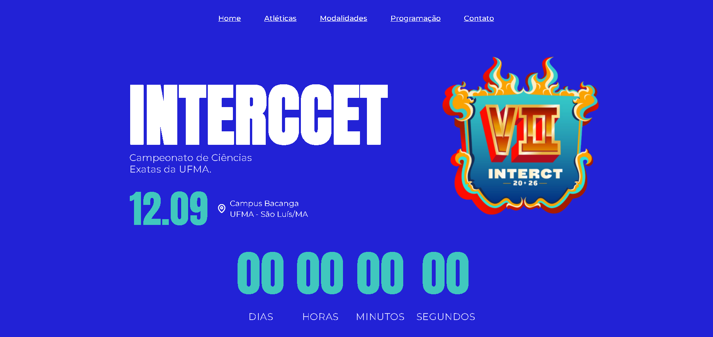
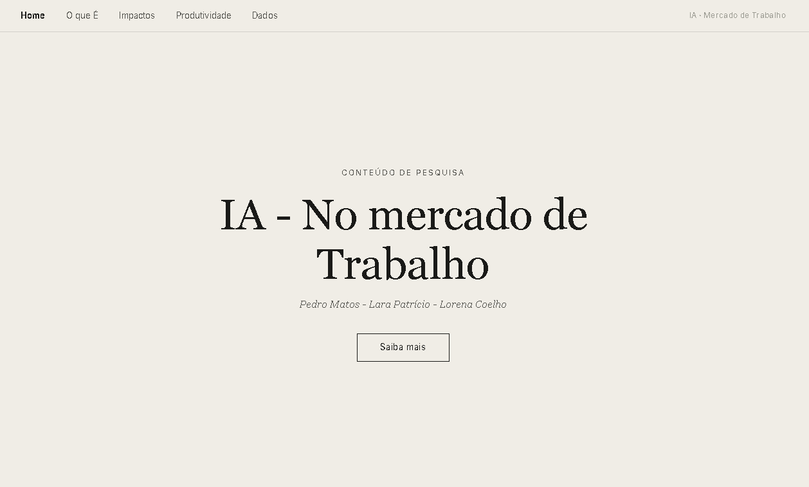

Pedro Matos
Desenvolvedor Front-end no Programa Trilhas
-

Acessar projeto → Interccet -

Acessar projeto → Introdução
Desenvolvedor Front-end no Programa Trilhas

Acessar projeto → Interccet
Acessar projeto → Introdução